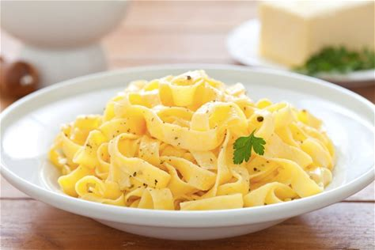
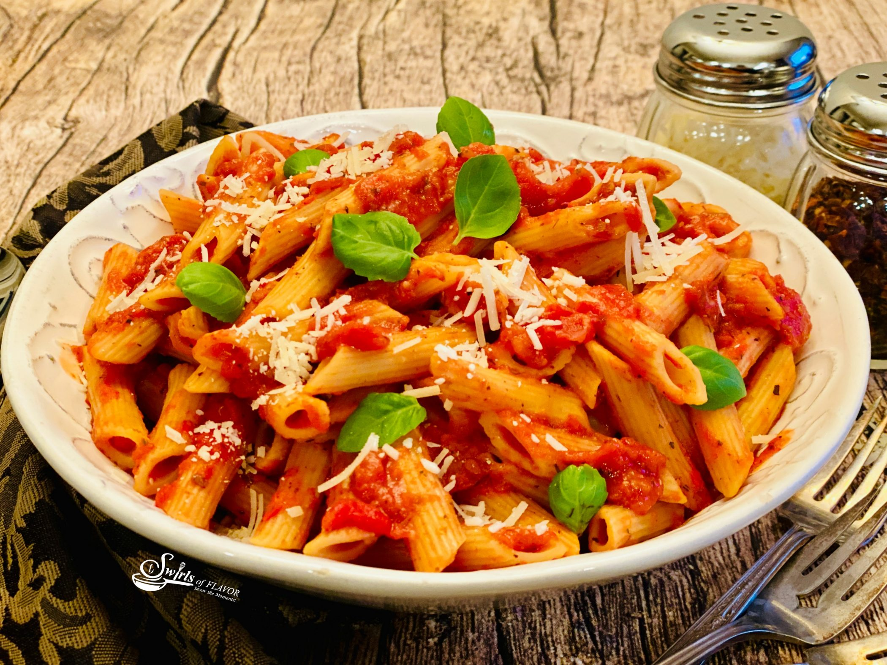
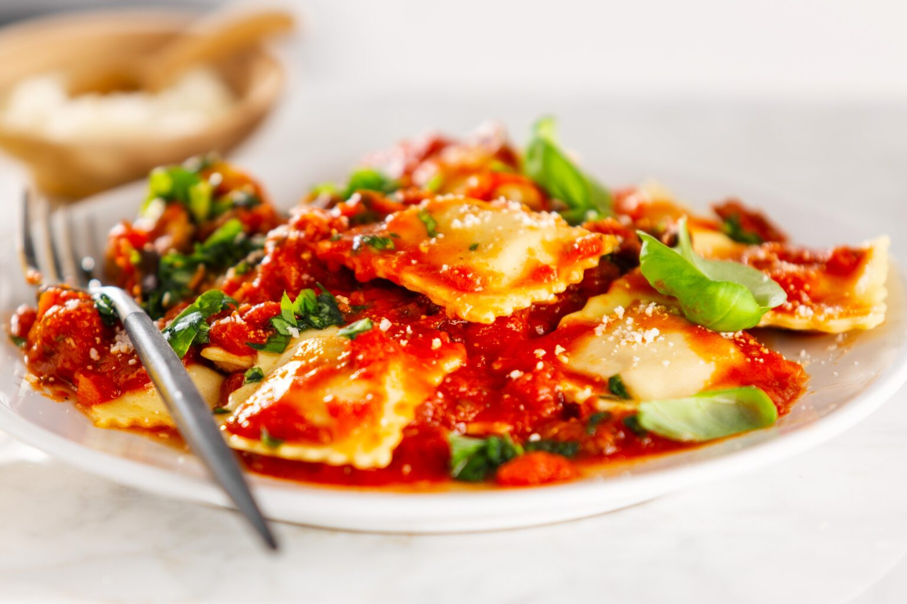

Spaghetti
Spaghetti is a long, thin noodle often served with tomato sauce or meatballs.

Fettuccine
Fettuccine are broad, flat noodles that pair well with creamy Alfredo sauce.

Penne
Penne are short, tube-shaped pasta, great for chunky sauces and casseroles.

Ravioli
Ravioli are stuffed pasta pockets, usually filled with cheese, meat, or vegetables.